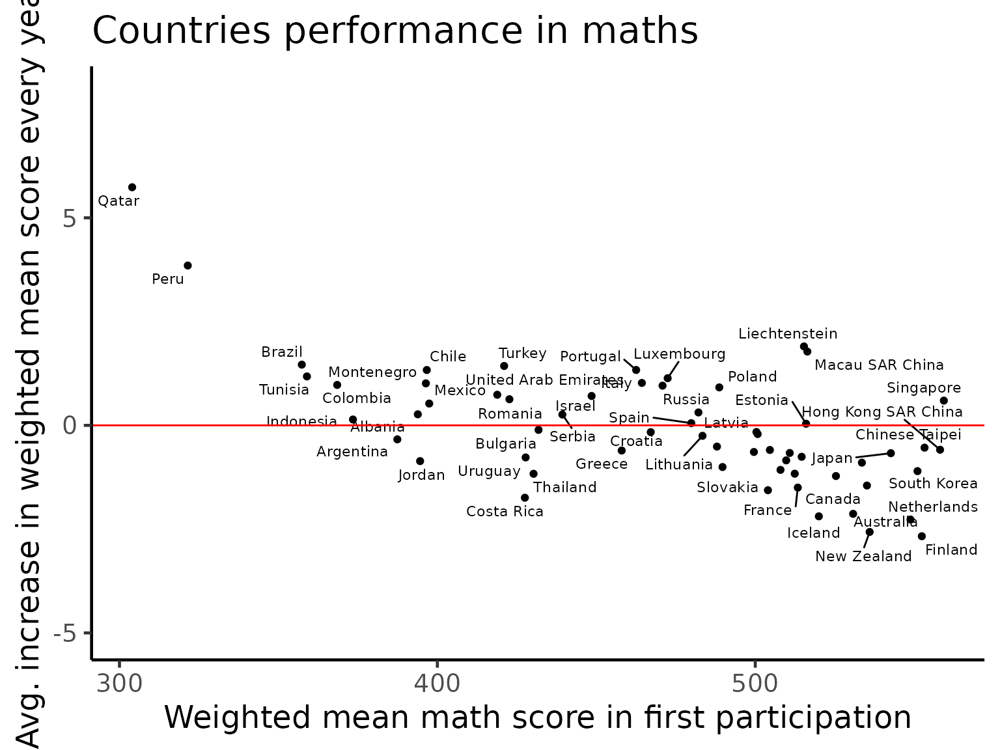
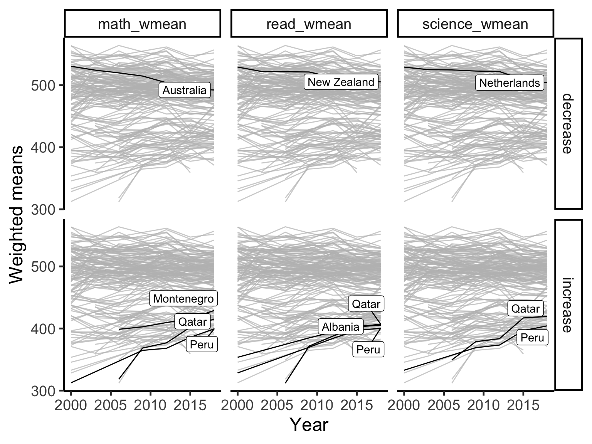
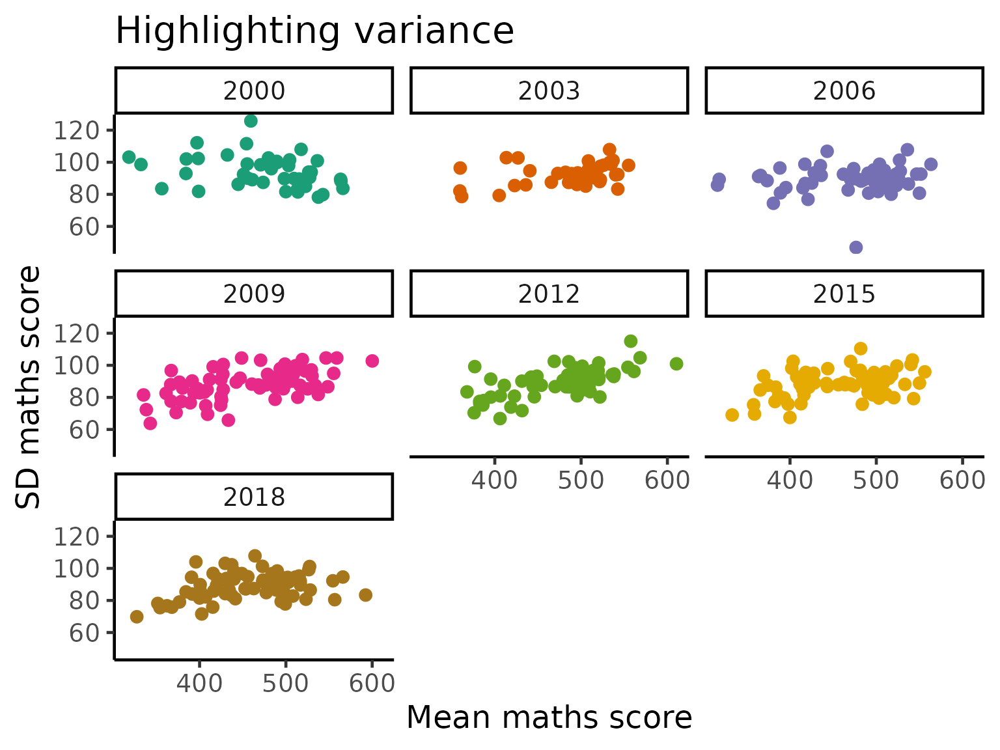
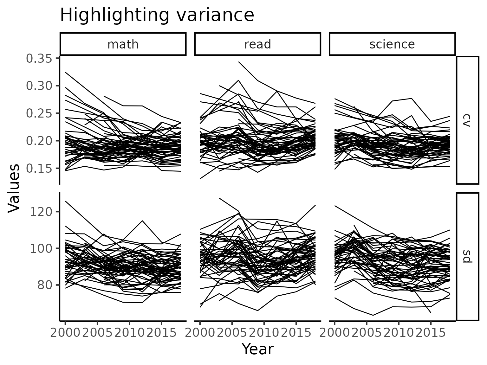
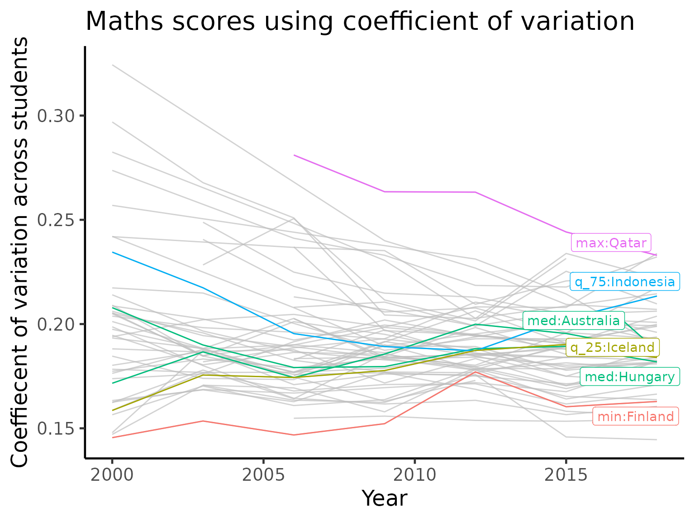
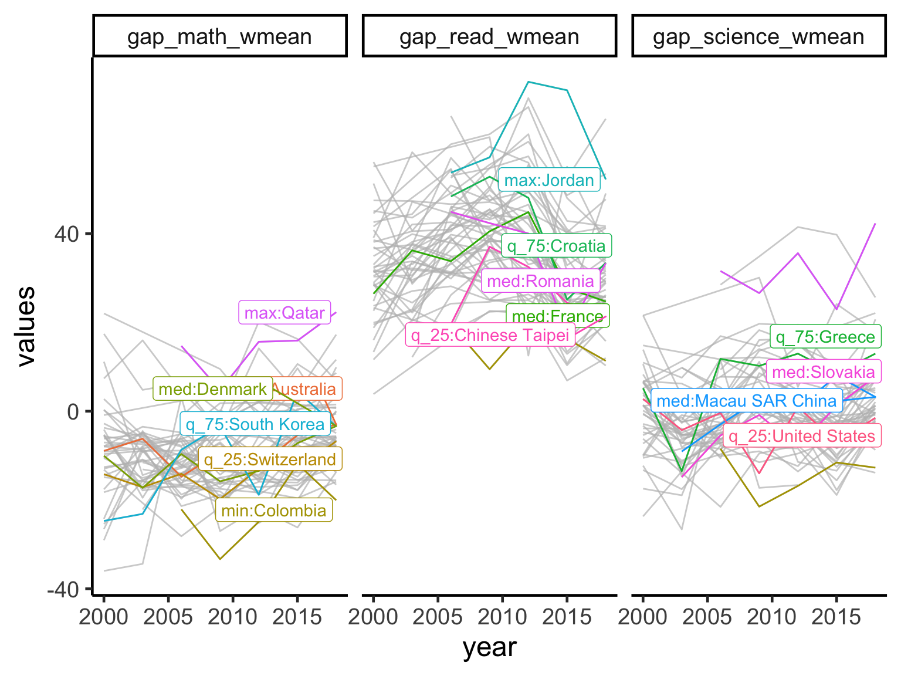
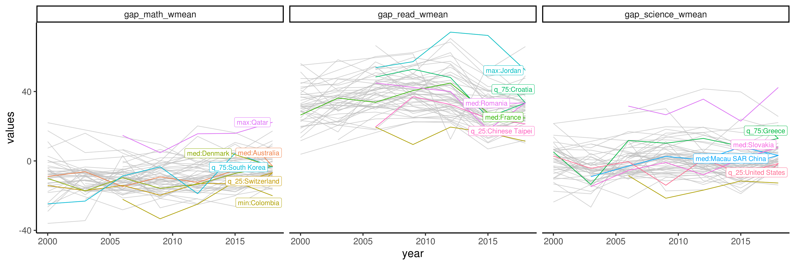
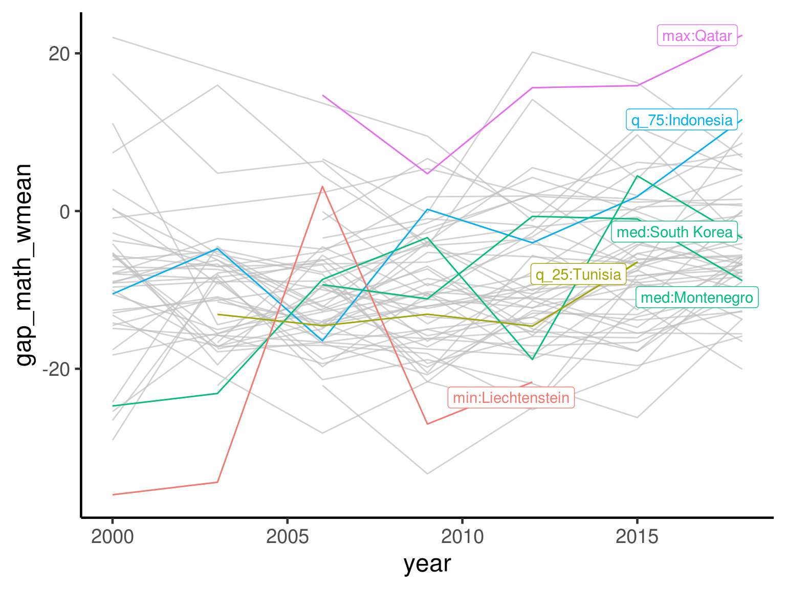
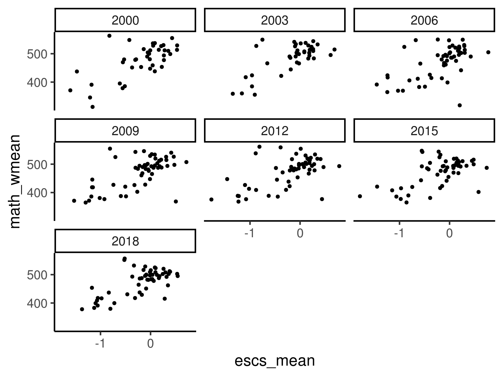

Exploring temporal trends
The Freemasons
2020-08-08
exploring_time.RmdIntroduction
One of the most interesting thing that we can explore in this cureated PISA data are the temporal trends for each country/region.
Basic time series visualisation
We will first visualise the time series trend of countries, regardless of when and how long they have participated in the PISA study.
The code below computes the weighted means of each subject (maths, reading and science) for each country for each year. Then, after some data wrangling, we will plot the weighted means as three time series plots, where each joined line in the plots represents a country’s performance in that subject over the time which they participated in the PISA study.
w_mean = function(x, w){weighted.mean(x = x, w = w, na.rm=TRUE)} stu_summ = student %>% group_by(year, country) %>% summarise_at(.vars = vars(math, read, science), .funs = list(wmean = ~w_mean(., w = stu_wgt), min = ~min(., na.rm = TRUE), max = ~max(., na.rm = TRUE))) %>% ungroup() %>% dplyr::mutate(year = year %>% as.character() %>% as.integer) stu_wmean_long = stu_summ %>% select(year, country, contains("wmean")) %>% pivot_longer(cols = contains("wmean"), names_to = "wmean_names", values_to = "wmean_values") stu_wmean_long %>% ggplot(aes(x = year, y = wmean_values, group = country)) + geom_line() + facet_wrap(~wmean_names) + labs(x = "Year", y = "Weighted mean values")

## Uncomment this to make interactive # library(plotly) # ggplotly()
Australia, New Zealand, Indonesia
A core of this package was built at the 2019 OzUnconf in Australia. Hence, we focus on three countries in the APAC region for more detailed visualisations. In the plot below, the dark line is the weighted mean score of each country for each subject. The shading indicates the min and max score of a given year. We can see that when looking at range of scores, the variations in the mean of the data is almost negligible. We will explore this effect in details later.
stu_summ_long2 = stu_summ %>% filter(country %in% c("AUS", "NZL", "IDN")) %>% pivot_longer(cols = math_wmean:science_max, names_to = "names", values_to = "values") %>% separate(col = names, into = c("subject", "statistics"), sep = "_") %>% pivot_wider(names_from = "statistics", values_from = "values") stu_summ_long2 #> # A tibble: 63 x 6 #> year country subject wmean min max #> <int> <fct> <chr> <dbl> <dbl> <dbl> #> 1 2000 AUS math 530. 211. 784. #> 2 2000 AUS read 529. 159 828. #> 3 2000 AUS science 527. 167. 800. #> 4 2000 IDN math 371. 88.5 646. #> 5 2000 IDN read 376. 93.3 610. #> 6 2000 IDN science 394. 84.4 680. #> 7 2000 NZL math 537. 195. 796. #> 8 2000 NZL read 529. 134. 834. #> 9 2000 NZL science 528. 169. 830. #> 10 2003 AUS math 524. 161. 833. #> # … with 53 more rows stu_summ_long2 %>% ggplot(aes(x = year, y = wmean)) + geom_ribbon(aes(ymin = min, ymax = max), fill = "grey70") + geom_line(colour = "black", size = 2) + facet_grid(subject~country, labeller = label_both) + labs(x = "Year", y = "Test score values")

brolgar visualisations
brolgar is a new package that will make visualisation of time series easier. We will now use this package to pick out some interesting patterns in the data.
Linear model for every country
We will now consider fitting a linear model for every country’s performance in maths. This will extract the general trend of performance in maths extracted from the “spaghetti” plot above.
There are many countries/regions who did not participate in all 7 PISA studies (between 2000 to 2018, a study is conducted every three years). As we are interested in calculating linear models, we will retain only those countries/regions participated in 5 or more studies.
For simplicity of interpretation, we will centre each country/region’s performance to the first time that country/region participated in the PISA study. Hence, the intercept terms of the linear models (x-axis in the plot below) represent the weighted means of the countries/regions when they first particulated in PISA study. The slope terms of the linear models (y-axis in the plot below) represent the average annual increase in the weighted mean score for each country/region.
Based on this interpretation, it appears that if a country/region has a good initial performance in the PISA study, then that country is likely to have reach “saturation” where it is hard for it to improve any further, and thus only has a small annual increase or even a decrease.
complete_nations = stu_summ %>% group_by(country) %>% filter(n() >= 5) %>% ungroup() %>% mutate(year_subtract = year - min(year)) %>% as_tsibble(key = country, index = year_subtract) math_slope = complete_nations %>% select( year_subtract, country, math_wmean) %>% key_slope(math_wmean ~ year_subtract) %>% left_join(countrycode, by = "country") math_slope %>% ggplot(aes(x = .intercept, y = .slope_year_subtract)) + geom_point() + geom_text_repel(aes(label = country_name), size = 3) + geom_hline(yintercept = 0, colour = "red") + labs(x = "Weighted mean math score in first participation", y = "Avg. increase in weighted mean score every year") + scale_y_continuous(limits = c(-5, 8))

math_slope_near <- math_slope %>% keys_near(key = country, var = .slope_year_subtract) math_slope_near #> # A tibble: 5 x 5 #> country .slope_year_subtract stat stat_value stat_diff #> <chr> <dbl> <fct> <dbl> <dbl> #> 1 NZL -2.48 min -2.48 0 #> 2 USA -0.816 q_25 -0.797 0.0187 #> 3 GRC 0.107 med 0.172 0.0641 #> 4 TUR 1.35 q_75 1.32 0.0336 #> 5 QAT 7.59 max 7.59 0
Highlighting monotone countries for subjects
There are some countries, since their initial participation in the PISA study, always exhibit monotone trending (increase or decrease). We will use the brolgar package to highlight these countries.
Quite interestingly, the countries exhibiting monotone decreasing patterns are Australia, New Zealand and Netherlands. Despite this decreasing pattern, all three countries remain on the top of the world in terms of their performance. This is consistent with the idea of “saturation” above as we can see a cluster of countries towards the top of the score range of each subject. On the other hand, Qatar and Peru are the two countries that massively improved their performance since the PISA study began.
feature_monotone = complete_nations %>% features_at(.var = vars(math_wmean, read_wmean, science_wmean), features = feat_monotonic) %>% dplyr::select(country, contains("increase"), contains("decrease")) feature_monotone_long = feature_monotone %>% pivot_longer(cols = -country, names_to = "names", values_to = "monotone_value") %>% separate(col = names, into = c("subject", "direction"), sep = "_(?!.*_)") plot_tbl = complete_nations %>% as_tibble() %>% select(year, country, math_wmean, read_wmean, science_wmean) %>% pivot_longer(cols = contains("_wmean"), names_to = "subject", values_to = "wmean_value") %>% left_join(feature_monotone_long, by = c("country", "subject")) %>% left_join(countrycode, by = "country") plot_tbl #> # A tibble: 2,130 x 7 #> year country subject wmean_value direction monotone_value country_name #> <int> <chr> <chr> <dbl> <chr> <lgl> <chr> #> 1 2000 ALB math_wmean 395. increase FALSE Albania #> 2 2000 ALB math_wmean 395. decrease FALSE Albania #> 3 2000 ALB read_wmean 354. increase TRUE Albania #> 4 2000 ALB read_wmean 354. decrease FALSE Albania #> 5 2000 ALB science_wmean 378. increase FALSE Albania #> 6 2000 ALB science_wmean 378. decrease FALSE Albania #> 7 2009 ALB math_wmean 377. increase FALSE Albania #> 8 2009 ALB math_wmean 377. decrease FALSE Albania #> 9 2009 ALB read_wmean 385. increase TRUE Albania #> 10 2009 ALB read_wmean 385. decrease FALSE Albania #> # … with 2,120 more rows plot_tbl %>% ggplot(aes(x = year, y = wmean_value, group = interaction(country, subject))) + geom_line() + gghighlight::gghighlight(monotone_value, label_key = country_name) + facet_grid(direction~subject) + labs(x = "Year", y = "Weighted means")

Highlighting variance
As the PISA study spans multiple countries, schools and across time, there is a huge amount of variations in the data that the simple linear analyses above are not able to fully capture. Here, we will turn our attention to the variability themselves and visualise these. We will primarily use standard deviation and coefficient of variation to visualise the general trends of countries/region over time.
student %>% group_by(year, country) %>% summarise_at( .vars = vars(math, read, science, wealth, escs), .funs = list( mean = ~ mean(., na.rm = TRUE), sd = ~ sd(., na.rm = TRUE))) %>% ggplot(aes(x = math_mean, y = math_sd, colour = year)) + geom_point(size = 3) + scale_colour_brewer(palette = "Dark2") + labs(x = "Mean maths score", y = "SD maths score") + facet_wrap(~year)

cv = function(x){ sd(x, na.rm = TRUE)/mean(x, na.rm = TRUE) } stu_var_summ = student %>% group_by(year, country) %>% summarise_at( .vars = vars(math, read, science), .funs = list( sd = ~ sd(., na.rm = TRUE), cv = ~ cv(.))) %>% dplyr::mutate(year = year %>% as.character() %>% as.integer) %>% group_by(country) %>% filter(n() >= 5) %>% ungroup() stu_var_summ_long = stu_var_summ %>% pivot_longer(cols = -c("year", "country"), names_to = "names", values_to = "values") %>% separate(col = "names", into = c("subject", "statistic"), sep = "_") stu_var_summ_long %>% ggplot(aes(x = year, y = values, group = country)) + geom_line() + facet_grid(statistic~subject, scales = "free_y")

In the plot above, we see that there countries that has high variations tend to lower as time passes by while low variations tend to stay stay that way. This implies that most countries/regions typically exhibit non-increasing pattern in terms of the quality of performance.
We now zoom into the mathematics performance (measured using coefficient of variation) panel and take a close look at the countries, highlighting certain countries of interest.
stu_var_summ = stu_var_summ %>% as_tsibble(key = country, index = year) stu_var_near = stu_var_summ %>% features(math_cv, feat_brolgar) %>% keys_near(key = country, var = median) stu_var_near #> # A tibble: 6 x 5 #> country median stat stat_value stat_diff #> <fct> <dbl> <fct> <dbl> <dbl> #> 1 FIN 0.153 min 0.153 0 #> 2 ISL 0.178 q_25 0.178 0.000122 #> 3 AUS 0.187 med 0.187 0.000772 #> 4 HUN 0.188 med 0.187 0.000772 #> 5 IDN 0.202 q_75 0.201 0.00110 #> 6 QAT 0.263 max 0.263 0 stu_var_plotdf = stu_var_summ_long %>% filter(subject == "math", statistic == "cv") %>% left_join(stu_var_near, by = "country") %>% left_join(countrycode, by = "country") %>% as_tibble() %>% mutate(label_stats_country = ifelse(is.na(stat), NA, paste0(stat, ":", country_name))) stu_var_plotdf %>% ggplot(aes(x = year, y = values, group = country, colour = stat)) + geom_line() + gghighlight::gghighlight(!is.na(stat), label_key = label_stats_country) + labs(y = "Coef. of variation across students")

We again see Qatar appearing in this visualisation. Qatar is highlighted as it is the country with a large amount of variations, implying a high level of inequality in the performance in mathematics. But what is particularly interesting here is that Qatar is consistently lowering the variation every time it participate in the PISA study. Combined with the visualisations above, we might conjecture that Qatar is not only improving its performance but also the equality of access.
Gender gap over time
One of the ongoing myth in education is that there is a difference in the performance of different subjects by gender. While this may appear true in selected cases, it is important to note gender is often a confounding variable masking the effect of some genuine underlying cause. Together with the large amount of variations in the data across socio-economic status of different families in different countries/regions, it is never possible to draw a generalised conclusion.
That being said, we will now visualise the differences in the average test scores for each gender (PISA study chose a binary coding). Across the three subjects, there are more countries with a higher average for the boys in maths. In reading, girls completely dominate in every country while performance in science is more evenly split between the genders.
stu_gender_summ = student %>% filter(complete.cases(gender)) %>% group_by(year, country, gender) %>% summarise_at(.vars = vars(math, read, science), .funs = list(wmean = ~w_mean(., w = stu_wgt))) %>% mutate(year = year %>% as.character() %>% as.integer) %>% group_by(country) %>% filter(n() >= 10) %>% ungroup() %>% pivot_longer(cols = contains("_wmean"), names_to = "names", values_to = "values") %>% pivot_wider(names_from = c("gender", "names"), values_from = "values") stu_ggap_summ = stu_gender_summ %>% dplyr::transmute( year, country, gap_math_wmean = female_math_wmean - male_math_wmean, gap_read_wmean = female_read_wmean - male_read_wmean, gap_science_wmean = female_science_wmean - male_science_wmean) stu_ggap_summ_long = stu_ggap_summ %>% pivot_longer(cols = contains("gap"), names_to = "gap_names", values_to = "gap_values") stu_ggap_summ_long %>% ggplot(aes(x = year, y = gap_values)) + geom_point() + geom_line(aes(group = country)) + geom_hline(yintercept = 0, colour = "red") + facet_wrap(~gap_names) + labs(title = "Avg. gender gaps for countries across subjects and years", subtitle = "Gap = avg. female score - avg. male score")

Highlighting key countries across all three subjects
stu_ggap_summ_nest = stu_ggap_summ %>% pivot_longer(contains("_wmean"), names_to = "names", values_to = "values") %>% group_by(names) %>% nest() %>% mutate(f_tbl = map(.x = data, .f = ~ .x %>% as_tsibble(key = country, index = year) %>% features(values, feat_brolgar) %>% keys_near(key = country, var = range2)), f_data = map2(.x = data, .y = f_tbl, .f = ~ left_join(.x, .y, by = "country"))) stu_ggap_summ_plotdf = stu_ggap_summ_nest %>% select(names, f_data) %>% unnest(f_data) %>% left_join(countrycode, by = "country") %>% mutate(label_stats_country = ifelse(is.na(stat), NA, paste0(stat, ":", country_name))) stu_ggap_summ_plotdf %>% ggplot(aes(x = year, y = values)) + geom_line(aes(group = country, colour = country)) + gghighlight(!is.na(stat), label_key = label_stats_country, calculate_per_facet = TRUE, keep_scales = TRUE) + facet_wrap(~names)

Highlighting key countries for maths only
stu_gap_math_near = stu_ggap_summ %>% as_tsibble(key = country, index = year) %>% features(gap_math_wmean, feat_brolgar) %>% keys_near(key = country, var = median) stu_gap_math_plotdf = stu_ggap_summ %>% as_tibble() %>% left_join(stu_gap_math_near, by = "country") %>% left_join(countrycode, by = "country") %>% mutate(label_stats_country = ifelse(is.na(stat), NA, paste0(stat, ":", country_name))) p_math = stu_gap_math_plotdf %>% ggplot(aes(x = year, y = gap_math_wmean, group = country, colour = stat)) + geom_line() + gghighlight::gghighlight(!is.na(stat), label_key = label_stats_country) p_math

Socio-economics visualisation (animaged)
Here, we visualise the association betwen socio-economic score and the weighted maths scores in an animation.
stu_eco_math_summ = student %>% group_by(year, country) %>% summarise(math_wmean = w_mean(x = math, w = stu_wgt), escs_mean = mean(escs, na.rm = TRUE)) %>% group_by(country) %>% filter(n() >= 5) %>% ungroup() stu_eco_math_summ %>% ggplot(aes(x = escs_mean, y = math_wmean)) + geom_point() + facet_wrap(~year)

stu_eco_math_summ %>% mutate(year = year %>% as.character %>% as.integer) %>% left_join(countrycode, by = "country") %>% ggplot(aes(x = escs_mean, y = math_wmean, group = country, label = country_name)) + # geom_point() + geom_text() + geom_path() + transition_reveal(along = year) + labs(title = 'Year: {frame_along}', x = 'Socio-economics score', y = 'Maths weighted mean score') #> NULL
Session info
sessionInfo() #> R version 4.0.2 (2020-06-22) #> Platform: x86_64-pc-linux-gnu (64-bit) #> Running under: Ubuntu 16.04.6 LTS #> #> Matrix products: default #> BLAS: /usr/lib/openblas-base/libblas.so.3 #> LAPACK: /usr/lib/libopenblasp-r0.2.18.so #> #> locale: #> [1] LC_CTYPE=en_US.UTF-8 LC_NUMERIC=C #> [3] LC_TIME=en_US.UTF-8 LC_COLLATE=en_US.UTF-8 #> [5] LC_MONETARY=en_US.UTF-8 LC_MESSAGES=en_US.UTF-8 #> [7] LC_PAPER=en_US.UTF-8 LC_NAME=C #> [9] LC_ADDRESS=C LC_TELEPHONE=C #> [11] LC_MEASUREMENT=en_US.UTF-8 LC_IDENTIFICATION=C #> #> attached base packages: #> [1] stats graphics grDevices utils datasets methods base #> #> other attached packages: #> [1] gganimate_1.0.6 tsibble_0.9.2 ggrepel_0.8.2 #> [4] gghighlight_0.3.0 brolgar_0.0.5.9100 patchwork_1.0.1 #> [7] forcats_0.5.0 stringr_1.4.0 dplyr_1.0.1 #> [10] purrr_0.3.4 readr_1.3.1 tidyr_1.1.1 #> [13] tibble_3.0.3 ggplot2_3.3.2 tidyverse_1.3.0 #> [16] learningtower_0.0.0.9000 #> #> loaded via a namespace (and not attached): #> [1] Rcpp_1.0.5 lubridate_1.7.9 prettyunits_1.1.1 #> [4] utf8_1.1.4 assertthat_0.2.1 rprojroot_1.3-2 #> [7] digest_0.6.25 R6_2.4.1 cellranger_1.1.0 #> [10] backports_1.1.8 reprex_0.3.0 evaluate_0.14 #> [13] httr_1.4.2 pillar_1.4.6 rlang_0.4.7 #> [16] progress_1.2.2 readxl_1.3.1 rstudioapi_0.11 #> [19] blob_1.2.1 rmarkdown_2.3 pkgdown_1.5.1.9000 #> [22] labeling_0.3 desc_1.2.0 fabletools_0.2.0 #> [25] munsell_0.5.0 broom_0.7.0 anytime_0.3.8 #> [28] compiler_4.0.2 modelr_0.1.8 xfun_0.16 #> [31] pkgconfig_2.0.3 htmltools_0.5.0 tidyselect_1.1.0 #> [34] fansi_0.4.1 crayon_1.3.4 dbplyr_1.4.4 #> [37] withr_2.2.0 grid_4.0.2 distributional_0.1.0 #> [40] jsonlite_1.7.0 gtable_0.3.0 lifecycle_0.2.0 #> [43] DBI_1.1.0 magrittr_1.5 scales_1.1.1 #> [46] cli_2.0.2 stringi_1.4.6 farver_2.0.3 #> [49] fs_1.5.0 xml2_1.3.2 ellipsis_0.3.1 #> [52] generics_0.0.2 vctrs_0.3.2 RColorBrewer_1.1-2 #> [55] tools_4.0.2 glue_1.4.1 tweenr_1.0.1 #> [58] hms_0.5.3 yaml_2.2.1 colorspace_1.4-1 #> [61] rvest_0.3.6 memoise_1.1.0 knitr_1.29 #> [64] haven_2.3.1